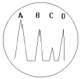
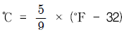
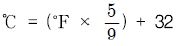
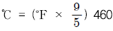
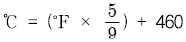
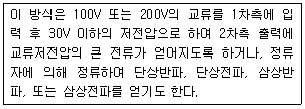
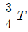
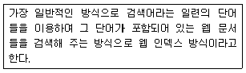
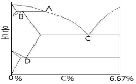

초음파비파괴검사기사(구) (2008-07-27 기출문제)
1과목: 초음파탐상시험원리
1. 동일 재질을 탐상할 때 A,B 두 에코의 높이가 표시기 높이의 100%와 20% 로 나타났다면 이 두 에코 높이의 차이는 몇 dB인가?
- 6dB
- 10dB
- 14dB
- 20dB
(정답률: 알수없음)

2. 종파를 이용하여 펄스반사법으로 알루미늄을 탐상시험할 때 탐상면으로부터 10mm 깊이에 불연속이 존재함을 알았다. 이때 탐상면으로 입사한 초음파가 표시기(CRT)에 불연속 에코를 나타낼 때까지 걸리는 시간은? ( 단, 알루미늄에서 종파속도는 6.0×106mm/s 이다. )
- 33초
- 3.3×10-6초
- 64초
- 6.6×10-6초
(정답률: 알수없음)
3. 초음파 에코의 지시진폭이 거리가 증가함에 따라 지수함수적으로 감소하는 영역은?
- 불감대 영역
- 근거리음장 영역
- 원거리음장 영역
- 시험편 모든 영역
(정답률: 알수없음)
4. [그림]은 수침법을 이용한 초음파탐상시험에서 표시기에 나타난 탐상도형이다. 물거리는 표시기에서 어느 부분을 나타내는 가? (단, A는 송신펄스, B는 전면반사지시, C는 불연속지시, D는 저면반사지시를 나타낸다.)

- A ∼ B 거리
- B ∼ C 거리
- C ∼ D 거리
- A ∼ D 거리
(정답률: 알수없음)
5. 종파가 물에서 입사각 10° 로 강(steel)으로 전달될 때 종파 굴절각은 몇 도인가? (단, 물에서의 종파속도는 1500m/s, 강에서의 종파속도는 5900m/s 이다.)
- 23°
- 43°
- 62°
- 80°
(정답률: 알수없음)
6. 일반적인 초음파탐상시험에 사용되는 탐촉자의 Q 값으로 다음 중 가장 적합한 값은?
- 0.5
- 5
- 50
- 500
(정답률: 알수없음)
7. 다음 중 비파괴검사법으로 측정 및 평가할 수 없는 것은?
- 시험체의 구조
- 재료의 충격 시험치
- 시험체 내의 결함
- 시험체의 계속 사용 여부
(정답률: 알수없음)
8. 다음 중 수세성 형광침투탐상시험의 특징으로 볼 수 없는 것은?
- 표면의 얕고, 가느다란 홈의 탐상이 어렵다.
- 열쇠구멍이나 나사부분의 탐상이 가능하다.
- 수분이 있으면 침투액의 성능이 현저히 떨어진다.
- 사용하기가 불편하지만 넓은 면적을 단 한 번의 조작으로 탐상이 가능하다.
(정답률: 알수없음)
9. 방사선투과시험에서 현상액의 온도가 규격에 화씨(℉)로 되어있어 섭씨온도로 변환시켜 측정된 값과 비교하고자 한다. 다음 중 화씨온도(℉)를 섭씨온도(℃)로 변환하는 식으로 옳은 것은?




(정답률: 알수없음)
10. 다음 중 금속의 용접부위에 대한 체적형 내부 결함검출에 가장 효과적인 비파괴검사법은?
- 방사선투과시험
- 자분탐상시험
- 침투탐상시험
- 와전류탐상시험
(정답률: 알수없음)
11. 누설시험의 목적을 가장 옳게 설명한 것은?
- 제품의 표면결함을 검출
- 용접부 내부결함의 크기와 위치를 파악
- 제품이 조기에 파손되는 것을 방지하고 제품의 신뢰성을 확보
- 강자성체 용접부에서 결함으로부터 야기되는 누설자속을 측정하여 파악
(정답률: 알수없음)
12. 다음 누설시험 방법 중 가장 감도가 우수한 것은?
- 기포누설시험
- 헬륨누설시험
- 할로겐누설시험
- 암모니아누설시험
(정답률: 알수없음)
13. 다음은 자분탐상시험의 자화전류를 발생시키는 자화전원부의 어떤 형식을 설명한 것이다. 이에 해당하는 형식으로 옳은 것은?

- 축전기 방전식
- 강압 변압기식
- 강압 정류식
- One-Pulse 통전식
(정답률: 알수없음)
14. 다음 중 초음파탐상시험의 장점이 아닌 것은?
- 결함으로부터의 지시를 곧바로 얻을 수 있다.
- 시험체의 한 면만을 이용하여 결함을 측정할 수 있다.
- 내부조직의 입도가 크고 기포가 많은 부품 등의 탐상에 유용하다.
- 침투력이 매우 높이 두꺼운 단면을 갖는 부품의 깊은 곳에 있는 결함도 용이하게 검출한다.
(정답률: 알수없음)
15. 침투탐상시험 중 다른 탐상 방법에 비해 미세한 결함에 가장 감도가 높은 것은?
- 수세성 형광침투탐상시험
- 후유화성 형광침투탐상시험
- 용제제거성 염색침투탐상시험
- 용제제거성 형광침투탐상시험
(정답률: 알수없음)
16. 시험체의 표면 근처에 불연속 또는 구조의 변화가 있으면 온도구배에 의해 전압이 발생하며 이를 전위차계로 검사하는 방법으로서 불연속, 편석, 열전 특성을 측정할 수 있는 비파괴검사법은?
- 열적 검사법
- 화학분석 검사법
- 방사선투과 검사법
- 음파-초음파 검사법
(정답률: 알수없음)
17. 다음 중 다른 비파괴시험과 비교할 때 와전류탐상시험의 장점으로 볼 수 없는 것은?
- 결함탐상 및 재질검사 등 여러 데이터를 동시에 얻을 수 있다.
- 표면으로부터 깊은 내부결함의 검출은 곤란하지만, 표면결함의 검출에 뛰어나다.
- 고온에서의 탐상을 수행할 수 있고, 가는 선, 내부구멍 등의 검사를 수행할 수 있다.
- 지시는 분석이 용이한 실물과 같은 형태로 직접 볼 수 있으며, 크기와 위치를 정확히 알 수 있다.
(정답률: 알수없음)
18. 철강재를 용접하여 일정시간 경과 후 표면 및 표면직하에 결함이 있는지를 검출하기 위한 경제적이고 손쉬운 비파괴검사법은?
- 방사선투과검사
- 초음파탐상검사
- 자분탐상검사
- 와전류탐상검사
(정답률: 알수없음)
19. 와전류탐상시험에서 탐상 코일의 임피던스에 영향을 미치는 인자로 가장 거리가 먼 것은?
- 시험체의 전도도
- 시험체의 투자율
- 시험체의 보자력
- 시험체의 형상과 치수
(정답률: 알수없음)
20. 초음파의 특성에 대한 설명 중 잘못된 것은?
- 지향성이 좋다.
- 진행거리가 비교적 길다.
- 동일 매질 내에서 속도가 일정하다
- 전파와 같이 진공 중에서도 진행한다.
(정답률: 알수없음)
2과목: 초음파탐상검사
21. 초음파의 감쇠가 적은 일반적인 강재를 종파 경사각 탐촉자를 사용하여 검사할 경우 주의해야 할 내용으로 옳은 것은?
- 감쇠가 적기 때문에 굴절각 70° 인 탐촉자를 사용한다.
- 펄스에코가 높기 때문에 게인조정에 주의한다.
- 횡파도 동시에 전파되기 때문에 1회 반사법을 사용해야 한다.
- 이면(異面)에서 반사되어 횡파로 모드 변환하기 때문에 직사법을 사용해야 한다.
(정답률: 알수없음)
22. 초음파탐상시 에코A 를 20dB 올렸더니 에코B 의 높이와 같아졌다면 에코 A 와 에코 B 의 높이 비(B/A)는 얼마인가?
- 1
- 3
- 10
- 14
(정답률: 알수없음)
23. 초음파탐상검사에서 분해능에 영향을 미치는 것과 가장 거리가 먼 것은?
- 탐촉자 직경(Diameter)
- 탐촉자 대역폭(Band Width)
- 진동자 두께(Crystal thickness)
- 펄스반복율(Pulse-repetition rate)
(정답률: 알수없음)
24. 펄스반사법 탐상장치를 사용하여 평판 맞대기 강용접부를 경사각 탐촉자로 탐상할 때 측정범위를 조정하기 위하여 STB-A7963(Miniature Block) 표준시험편을 사용했다. 초음파빔의 방향이 곡률반경 25mm 쪽 곡면을 향하였을 때 나타나는 에코가 아닌 것은?
- 25mm 위치의 에코
- 50mm 위치의 에코
- 100mm 위치의 에코
- 175mm 위치의 에코
(정답률: 알수없음)
25. 펄스반사법에 의한 판재의 초음파탐상에서 수직탐촉자를 사용하였을 때 다음 중 가장 쉽게 검출할 수 있는 결함은?
- 핀홀
- 용접 기공
- 라미네이션
- 표면 미세균열
(정답률: 알수없음)
26. 경사각 탐상에서 탐촉자-용접부 거리를 일정하게 하고, 탐촉자를 용접선에 평행하게 이동시키는 주사법은?
- 진자주사
- 목돌림주사
- 좌우주사
- 두갈래주사
(정답률: 알수없음)
27. 두꺼운 시험편의 특정한 깊이 부분을 관심을 가지고 검사하고자 한다. 이 때 CRT 상에 에코간의 간격을 변화시키지 않고 임의로 위치를 이동하는데 사용하는 노브는?
- 송신조정 노브
- 펄스위치조정 노브
- 음속조정 노브
- 측정범위조정 노브
(정답률: 알수없음)
28. 초음파탐상시 결함지시길이 측정을 dB drop법으로 하였을 때의 특징으로 옳은 것은?
- 자동화가 용이하다.
- 에코 높이의 영향을 비교적 많이 받는다.
- 전이 손실이나 감쇠의 영향을 크게 받지 않는다.
- 탐상 결과는 탐상자의 개인차가 발생할 수 없다.
(정답률: 알수없음)
29. 초음파 탐상기의 조정 노브 중에서 표시기의 종축에 관계되는 것은?
- 시간축의 조정
- 측정범위의 조정
- 펄스(pulse) 위치의 조정
- 리젝션(rejection)의 조정
(정답률: 알수없음)
30. 전자음향 탐촉자(EMAT: electromagnetic acoustic ransduce -r)에 대한 설명으로 틀린 것은?
- 접촉매질은 주로 고무를 사용한다.
- 자계를 이용하여 초음파를 발생시키는 방법이다.
- 시험체의 온도가 높거나, 표면이 거칠어도 적용할 수 있다.
- 외부진동자의 진동이 없이도 시험체내에 초음파를 발생시킬 수 있다.
(정답률: 알수없음)
31. 다음 중 판재를 경사각 초음파탐상으로 검사할 때 가장 검출하기 어려운 결함은?
- 방향이 불규칙한 개재물
- 작은 불연속이 군집된 기공
- 초음파 방향과 평행한 라미네이션
- 초음파빔에 수직으로 존재하는 균열
(정답률: 알수없음)
32. 다음 중 용접부를 초음파탐상할 때 표면 근방의 어떤 결함을 탐지할 목적으로 용접선상 주사 및 경사평행 주사를 주로 실시하는가?
- 융합불량 탐지
- 용접부의 횡균열 탐지
- 용접부의 종균열 탐지
- 용접부의 내부용입부족 탐지
(정답률: 알수없음)
33. 강 용접부 모재의 두께가 15mm 인 맞대기 용접부 검사에 일반적으로 가장 많이 사용되는 초음파탐상시험법은?
- 공진법
- 수직 탐상법
- 경사각 탐상법
- 표면파 탐상법
(정답률: 알수없음)
34. 펄스반사법에서 표시기에 나타난 결함으로부터 반사원지시인 결함 에코를 등급분류할 때 다음 중 직접적으로 필요한 항목은?
- 시험주파수
- 진동자의 크기
- 결함 에코의 높이
- 탐촉자의 공칭굴절각
(정답률: 알수없음)
35. 두께 25mm인 용접부위를 굴절각 45° 의 탐촉자로 2스킵까지 경사각탐상코자 한다. 이 대 2스킵 거리(Y2.0s)는 몇 mm인가?
- 100
- 125
- 150
- 200
(정답률: 알수없음)
36. 결함에코의 높이가 비교적 낮고 폭이 좁은 특성이 있으며, 진자주사를 하거나 반대 쪽에서 주사를 하여도 거의 일정한 펄스 강도를 나타냈다면 검출된 결함은 다음 중 어느 것에 가장 가까운가?
- 균열
- 기공
- 융합불량
- 슬래그 혼입
(정답률: 알수없음)
37. 다음 중 적산 효과에 대한 설명으로 틀린 것은?
- 결함이 작을 때 관찰된다.
- 얇은 판재 검사시 관찰된다.
- 투과법으로 검사시 확실하게 관찰된다.
- 결함에 의해 발생된 에코가 반복되어 나타난다.
(정답률: 알수없음)
38. 철과 알루미늄이 균일하게 접합된 시험체에 알루미늄판에서 발생한 초음파가 철판으로 수직 입사할 때 음압반사율은 약몇 % 가 되는가? ( 단, 알루미늄: 밀도 2.7g/cm3, 음속 6400m/s 철: 밀도 7.8g/cm3, 음속 5900m/s 초음파의 진행에 따른 감쇠는 없는 것으로 한다.)
- 45
- 64
- 79
- 97
(정답률: 알수없음)
39. 용접부를 초음파탐상할 경우 탐촉자 선정시 탐상주파수와 탐촉자의 크기와 관련하여 고려해야 할 내용 중 틀린 것은?
- 탐상속도를 높여야 할 때에는 고주파수의 큰 탐촉자를 사용한다.
- 분해능을 높이기 위해서는 고주파수를 이용하여 광대역 탐촉자를 사용한다.
- 탐상면의 거칠기가 클 때에는 낮은 주파수를 사용하여 표면의 산란을 방지한다.
- 시험체의 결정립이 클 경우에는 저주파수를 사용하여 산란에 의한 감쇠를 보상해 주며, 광대역 탐촉자를 사용한다.
(정답률: 알수없음)
40. 다음 중 진동자의 두께가 얇아 깨어지기 쉬우므로 주로 수침용 탐상에 사용되는 주파수(MHz)로 옳은 것은?
- 1
- 2
- 5
- 10
(정답률: 알수없음)
3과목: 초음파탐상관련규격및컴퓨터활용
41. 압력용기용 강판의 초음파탐상 검사방법(KS D 0233)에 따라 강판을 수직 탐촉자로 탐상할 때 탐상감도를 조정하기 위하여 STB-N1:25% 시험편을 사용했다면 이 강판의 두께 범위로 옳은 것은?
- 7-10mm
- 13-20mm
- 25-40mm
- 40-60mm
(정답률: 알수없음)
42. 보일러 및 압력용기에 대한 초음파 탐상검사 (ASME Sec.V, Art. 4)에 의한 용접부 탐상시 교정 확인 중 어떤 감도 설정이 그 진폭의 20% 또는 몇 dB 이상 변할 때 감도를 수정하고 재시험을 해야 하는가?
- 1
- 2
- 5
- 10
(정답률: 알수없음)
43. 강 용접부의 초음파 탐상시험 방법(KS B 0896)에 규정된 주파수의 선정에 관한 내용으로 옳은 것은?
- 모재의 판두께가 75mm 이하일 때 경사각탐상의 공칭 주파수는 5MHz 또는 2MHz 로 한다.
- 모재의 판두께가 75mm 를 초과할 때 경사각탐상의 공칭 주파수는 1MHz 로 한다.
- 사용하는 최대 빔 노정이 40mm 를 초과할 때 수직탐상공칭 주파수는 1MHz 또는 10MHz 로 한다.
- 사용하는 최대 빔 노정이 40mm 이하일 때 수직탐상 공칭 주파수는 10MHz 로 한다.
(정답률: 알수없음)
44. 보일러 및 압력용기에 대한 초음파 탐상검사 (ASME Sec.V, Art. 4)에 따라 곡률이 508mm(20인치) 이하인 시험대상물을 검사하기 위해 곡률이 254mm(10인치)인 기본교정시험편을 제작하였다. 이 시험편을 사용하여 검사할 수 있는 시험대상물의 곡률 반경 범위로 적합한 것은?
- 229mm(9인치) 이상 381mm(15인치) 이하의 곡률을 가진 것은 검사 가능하다.
- 229mm(9인치) 미만의 곡률을 가진 것은 검사 가능하다.
- 381mm(15인치) 초과하는 곡률을 가진 것은 검사 가능하다.
- 381mm(15인치) 초과하는 508mm(20인치) 미만인 것은 검사가능하다.
(정답률: 알수없음)
45. 보일러 및 압력용기에 대한 표준초음파탐상검사(ASME Sec.V Art.23 SA-609)에서 탐상시 탐촉자 유효지름의 최소 몇 % 를 중첩시켜 표면을 주사하도록 규정하고 있는가?
- 10%
- 20%
- 25%
- 50%
(정답률: 알수없음)
46. 초음파 탐촉자의 성능 측정방법(KS B ⑤35)에서 탐촉자의 종류ㆍ기호가 “N5Q20A" 으로 표시되었다. 이 중에 숫자 ”5“는 무엇을 나타내는가?
- 주파수 대역폭
- 공칭집속범위
- 공칭 주파수
- 진동자의 공칭치수
(정답률: 알수없음)
47. 압력용기용 강판의 초음파탐상 검사방법(KS D 0233)에서 탐상할 위치는 강판의 용도에 따라 다르다. 보일러관 판 및 동등한 가공을 한 압력용기의 검사 구분으로 옳은 것은?
- A형
- B형
- C형
- BL형
(정답률: 알수없음)
48. 보일러 및 압력용기에 대한 초음파 탐상검사 (ASME Sec.V, Art. 4)에 의한 경사각빔 사용을 위한 두께 76mm(3인치)인 기본 교정시험편에 가공되는 드릴 구멍의 깊이(경사 표면세서부터의 깊이)가 아닌 것은?
- T/3
- T/4
- T/2

(정답률: 알수없음)
49. 아크 용접 강관의 초음파탐상 검사방법(KS D 0252)에 따라 석유, 가스 등의 수송용 강관을 검사할 때 판정 레벨은 다음중 어느 것을 이용하는가?
- S-10의 에코 높이
- D-16의 에코 높이
- D-32의 에코 높이
- N-12.5의 에코 높이
(정답률: 알수없음)
50. 압력용기용 강판의 초음파탐상 검사방법(KS D 0233)으로 탐상시 탐상기의 성능 중 불감대에 대한 설명으로 옳은 것은?(단, 탐상기는 A 스코프 표시식인 경우이다.)
- 주파수가 5MHz일 때 20mm 이하로 한다.
- 주파수가 5MHz일 때 15mm 이하로 한다.
- 주파수가 2MHz일 때 20mm 이하로 한다.
- 주파수가 2MHz일 때 15mm 이하로 한다.
(정답률: 알수없음)
51. 압력용기용 강판의 초음파탐상 검사방법(KS D 0233)에 의거수직 탐촉자에 의한 경우 결함의 분류시 표시기호 △결함을 옳게 나타낸 것은? (단, F1 은 흠 에코높이, B1 은 저면 에코높이 이다.)
- F1 ＞ 100%, F1/B1 ＞ 100% 또는 B1 ≤ 50%
- 25% ＜ F1 ≤ 50%, 다만 B1 이 100% 미만일 때는 25% ＜ F1/B1 ≤ 50%
- 50% ＜ F1 ≤ 100%, 다만 B1 이 100% 미만일 때는 50% ＜ F1/B1 ≤ 100%
- F1 ≤ 25%, 다만 B1 이 100% 미만일 때는 F1/B1 ≤ 25%
(정답률: 알수없음)
52. 보일러 및 압력용기에 대한 초음파 탐상검사 (ASME Sec.V, Art. 4)에서 요구하는 장비의 직선성 정검은 몇 개월을 초과하지 않는 기간으로 하는가?
- 1개월
- 2개월
- 3개월
- 4개월
(정답률: 알수없음)
53. 금속재료의 펄스반사법에 따른 초음파탐상 시험방법통칙(KS B 0817)에서 탐상 도형의 표시 기호로 틀린 것은?
- 송신 펄스 : T
- 흠집 에코 : F
- 바닥면 에코 : A
- 표면 에코 : S
(정답률: 알수없음)
54. 보일러 및 압력용기에 대한 표준초음파탐상검사 (ASME Sec. V Art. 23 SA-435)에서 강판의 수직 빔 탐상의 표준을 규정하고 있다. 이 규격에 정한 적용 재료로 옳은 것은?
- 두께 10mm 이상인 특수용 클래드 강판 및 합금강판
- 두께 10mm 이상인 특수용 압연된 탄소강판 및 합금강판
- 두께 6.25mm 이상인 압연된 완전 킬드 탄소강판 및 합금강판
- 두께 12.5mm 이상인 압연된 완전 킬드 탄소강판 및 합금강판
(정답률: 알수없음)
55. 보일러 및 압력용기에 대한 초음파 탐상검사 (ASME Sec.V, Art. 4)에서 탐상시 주사감도는 대비기준과 비교하여 게인 조정을 어떻게 하여야 하는가?
- 대비기준과 같게 설정해야 한다.
- 대비기준보다 최소 6dB 높게 설정해야 한다.
- 대비기준보다 최소 9dB 높게 설정해야 한다.
- 대비기준보다 최소 12dB 높게 설정해야 한다.
(정답률: 알수없음)
56. 운영체제를 기능에 따라 분류할 때 제어프로그램에 해당하는 것은?
- 문제 프로그램
- 서비스 프로그램
- 언어 번역 프로그램
- 데이터 관리 프로그램
(정답률: 알수없음)
57. 중앙처리장치와 주기억장치와의 처리 속도 차이를 줄이기 위해 사용되는 고속 메모리는?
- Cache memory
- Virtual memory
- Dynamic memory
- Auxiliary memory
(정답률: 알수없음)
58. 우리나라 정부기관인 행정안전부(mopas)의 도메인 이름으로 옳은 것은?
- www.mopas.com
- www.mopas.go.kr
- www.mopas.co.kr
- www.mopas.pe.kr
(정답률: 알수없음)
59. 컴퓨터 바이러스에 감염되었을 때의 증상으로 거리가 먼 것은?
- 파일의 크기가 커진다.
- 엉뚱한 에러 메시지가 나온다.
- 프로그램이 실행되지 않는다.
- 컴퓨터의 속도가 빨라진다.
(정답률: 알수없음)
60. 다음이 설명하고 있는 웹 페이지 검색 방식은?

- 키 워드 검색 방식
- 메뉴 검색 방식
- 메타 검색 방식
- 지능형 검색 방식
(정답률: 알수없음)
4과목: 금속재료학
61. 다음 중 초전도현상 및 초전도 재료에 대한 설명으로 틀린 것은?
- 초전도체의 특성을 이용한 초전도 송전, 초전도 자석 등이 있다.
- 초전도체의 제조방법에는 졸겔법, 진공증착법, 스퍼터링법 등이 있다.
- 일반적으로 압력이 높아지면 초전도 현상은 불안정하며, 압력이 낮아지면 안정해진다.
- 초전도 현상은 외부자장이 물질 내로 침투하지 못 하는 자기적 현상인 동시에 전기저항이 완전히 사라지는 현상을 말한다.
(정답률: 알수없음)
62. Ba 금속의 x, y, z 축 절편의 길이가 1, 2, 3 일 때 면의 밀러지수는?
- (6, 3, 2)
- (2, 2, 2)
- (1, 2, 3)
- (1, 1, 1)
(정답률: 알수없음)
63. 초강인강(Ultra tough hardening steel)에서 지체파괴의 원인이 아닌 것은?
- 잔류응력과 인장응력이 있는 경우
- 수소를 함유하는 환경하에 있는 경우
- 강재의 강도 수준이 매우 낮은 경우
- 미시적 또는 거시적으로 응력집중부가 있는 경우
(정답률: 알수없음)
64. 충격시험에 대한 다음 설명 중 틀린 것은?
- 충격시험은 정적하중시험이다.
- 강의 인성과 취성을 알 수 있는 시험방법이다.
- 충격시험은 외부 충격에 대하여 재료의 저항을 측정하는 것은 말한다.
- 충격값은 재료에 단일 충격을 주었을 때 흡수되는 에너지를 노치부의 단면적으로 나눈 값으로 나타낸다.
(정답률: 알수없음)
65. 다음 중 순철의 변태가 아닌 것은?
- A0
- A2
- A3
- A4
(정답률: 알수없음)
66. 티타늄(Ti)과 티타늄 합금(Ti-6Al-4V 합금)에 대한 설명으로 틀린 것은?
- 압연성, 단조성, 성형성, 용접성, 고온특성 등의 여러 우수한 특성을 나타낸다.
- 티타늄은 비교적 비중이 작고, 융점이 높으며, 도전율이 낮은 특징을 갖는다.
- 소성변형에 대한 제약이 없어 내력/인장강도의 비가 0(zero)에 가깝다.
- 티타늄은 육방정 금속이며, 300℃ 부근의 온도구역에서 강도의 저하가 명백히 나타난다.
(정답률: 알수없음)
67. 다음 중 스테인리스강을 금속조직학적으로 분류할 때 이에 속하지 않는 것은?
- 펄라이트계
- 페라이트계
- 마텐자이트계
- 오스테나이트계
(정답률: 알수없음)
68. 역학적 강화기구에 의한 이론강도를 갖는 신소재로서 플라스틱을 소재로 개발된 유리섬유강화형 복합재료를 나타내는 것은?
- LED
- LSI
- SAP
- GFRP
(정답률: 알수없음)
69. 다음 중 Mg 및 그 합금에 대한 설명으로 옳은 것은?
- 실용재료로 비중이 약 8.5로 무거운 금속이다.
- 비강도(比强度)가 작아서 휴대용 기기나 항공우주용 재료로는 사용할 수 없다.
- 고온에서는 매우 비활성이므로 분말이나 절삭성은 발화의 위험이 없다.
- 고순도의 제품에서는 내식성이 우수하나 저순도 제품에서는 떨어지므로 표면피막처리가 필요하다.
(정답률: 알수없음)
70. 다음 중 Al-Cu 계 합금의 시효석출 과정으로 옳은 것은?
- GP영역 → θ 안정상 → θ ' 중간상 → 과포화고용체
- 과포화고용체 → GP영역 → θ ' 중간상 → θ 안정상
- θ 안정상 → θ ' 중간상 → GP영역 → 과포화고용체
- θ ' 중간상 → θ 안정상 → 과포화고용체 → GP영역
(정답률: 알수없음)
71. 다음 중 알루미늄 청동에 대한 설명으로 틀린 것은?
- 알루미늄 청동에는 α, β, γ, δ, ε, η 의 6개 상이 존재한다.
- 알루미늄 청동은 다른 동합금에 비하여 기계적 성질이 우수하다.
- 알루미늄 청동은 다른 동합금에 비하여 내해수성이 우수하다.
- 알루미늄 청동인 Novostone 합금의 표준 조성은 구리 +아연에 7.5% Al, 12% Mn, 2% Ni, 2.5% Fe 이다.
(정답률: 알수없음)
72. Al-Cu-Si계 합금으로 Si 에 의하여 주조성을 개선하고, Cu에 의해 피삭성을 좋게 한 합금의 명칭은?
- 라우탈(Lautal)
- 슈퍼인바(Super invar)
- 문쯔메탈(Muntz metal)
- 하이드로날륨(Hydronalium)
(정답률: 알수없음)
73. 탄소강을 담금질(quenching)할 때 마텐자이트의 강화요인이 아닌 것은?
- 오스테나이트를 확산 전단 응력을 일으켜 강화
- 결정의 미세화에 의한 강화
- 탄소에 의한 Fe 격자의 강화
- 급냉으로 인한 내부응력 증가에 따른 강화
(정답률: 알수없음)
74. 다음 중 금속이 응고할 때 팽창하는 금속으로만 짝지어진 것은?
- Bi, Ga
- Au, Ag
- Sn, Pb
- Al, Pb
(정답률: 알수없음)
75. Sn-Sb-Cu 를 주성분으로 하며, 인성, 경도 및 유동성이 우수하여 Bearing 합금으로 이용되는 것은?
- Tombac(톰백)
- Kelmet(켈멧)
- Babbit metal(베빗메탈)
- Monel metal(모넬메탈)
(정답률: 알수없음)
76. 합금원소가 주철의 조직과 성질에 미치는 영향을 설명한 것으로 틀린 것은?
- Si 는 Fe3C 를 분해하여 흑연화하는 원소이다.
- Cu 는 페라이트에 고용되어 불안정화되고, 흑연화를 저지시킨다.
- Ni 은 흑연화를 돕고 탄화물의 생성을 저지하여 칠(chill)방지에 효과적이다.
- V 은 흑연화를 방해하는 원소이며, 주철기지인 펄라이트를 치밀하게 하고, 흑연을 미세하게 하여 인장강도를 높인다.
(정답률: 알수없음)
77. 황동의 자연균열(season crack)을 방지하기 위한 대책으로 틀린 것은?
- 표면을 도금한다.
- 표면에 도료를 바른다.
- 응력방지 풀림을 한다.
- 암모니아로 세척한다.
(정답률: 알수없음)
78. 다음 중 강의 표면경화 열처리에서 고체 침탄 촉진제로 가장 많이 사용되는 것은?
- KCN
- KCl
- NaCl
- BaCO3
(정답률: 알수없음)
79. 용융금속으로부터 직접 금속분말을 제조하는 방법이 아닌 것은?
- 익스투류젼(Extrusion)
- 그레이닝(Graining)
- 분사법(Atomization)
- 쇼팅(Shotting)
(정답률: 알수없음)
80. Fe-C계 평형 상태도에서 레데뷰라이트(Ledeburite) 조직이 생기는 곳은?

- A
- B
- C
- D
(정답률: 알수없음)
5과목: 용접일반
81. 용접 홈 안에서의 용접 또는 필릿 용접이음 할 때 용접전류가 낮을 경우에 발생 될 수 있는 용접결함으로 가장 적합한 것은?
- 용입과다
- 용입불량
- 언더 컷
- 아크 스트라이크
(정답률: 알수없음)
82. 다음 용접법 중 압접법에 속하는 것은?
- 심 용접
- 전자빔 용접
- 티그 용접
- 테르밋 용접
(정답률: 알수없음)
83. 용접방향에 수직으로 발생하는 균열을 말하며 모재와 용착금속부에 확장될 수 있는 것으로 용접금속의 인성이 극히 작을 때 및 경화육성 용접할 때 자주 볼 수 있는 균열은?
- 가로 균열
- 설퍼 균열
- 크레이터 균열
- 비드 밑 균열
(정답률: 알수없음)
84. 접합하기 위하여 겹쳐 놓은 2부재의 한쪽에 둥근 구멍 대신에 좁고 긴 홈을 만들어 놓고 그곳을 용접하는 이음은?
- 필릿 용접
- 비드 용접
- 플러그 용접
- 슬롯 용접
(정답률: 알수없음)
85. AW200인 무부하 전압 80V, 아크 전압 30V인 교류 용접기를 사용할 때의 역률과 효율은? (단, 내부 손실은 4kW 이다.)
- 역률 75%, 효율 60%
- 역률 62.5%, 효율 60%
- 역률 60%, 효율 62.5%
- 역률 60%, 효율 75%
(정답률: 알수없음)
86. 용접이 끝나는 종점부분에서 아크를 짧게 천천히 운봉하며 다시 용접봉을 뒤로 보내 재빨리 아크를 끊는 방법과 가장 관계 있는 것은?
- 덧붙이의 처리방법
- 용접 슬래그의 처리방법
- 언더컷의 처리방법
- 크레이터의 처리방법
(정답률: 알수없음)
87. 서브머지드 아크 용접 장치에서 전극 형상에 의한 분류가 아닌 것은?
- 와이어(wire) 전극
- 대상(hoop) 전극
- 테이프(tape) 전극
- 보(beam) 전극
(정답률: 알수없음)
88. 내용적 40ℓ의 산소병에 130기압의 산소가 들어 있을 때, 가변압식 200번 팁을 토치로 사용하여 혼합비 1:1의 중성불꽃으로 작업을 하면 몇 시간 사용할 수 있는가?
- 26시간
- 200시간
- 20시간
- 61시간
(정답률: 알수없음)
89. 일반적인 피복금속 아크 용접에서 극성에 따른 모재측의 발열량이 큰 순서대로 표시한 것은?
- DCSP ＞ AC ＞ DCRP
- DCRP ＞ AC ＞ DCSP
- DCRP ＞ DCSP ＞ AC
- DCSP ＞ DCRP ＞ AC
(정답률: 알수없음)
90. 논 가스 아크 용접의 특징 설명으로 틀린 것은?
- 전자세 용접이 가능하다.
- 용접 전원으로 직류만 사용할 수 있다.
- 바람이 있는 옥외에서도 작업이 가능하다.
- 용접 길이가 긴 용접물은 아크를 중단하지 않고 연속용접을 할 수 있다.
(정답률: 알수없음)
91. CO2가스 아크 용접시의 정전압 특성을 바르게 설명한 것은?
- 전류와 전압이 항상 일정한 현상
- 전류가 증가하면 전압이 감소하는 현상
- 전류가 증가하면 전압도 증가하는 현상
- 전류가 증가하여도 전압이 일정하게 되는 현상
(정답률: 알수없음)
92. 산소용기는 이음매가 없는 강철재 구조로서 용기 위쪽 어깨 부분에 기호들이 각인되어 있다. 다음 기호설명이 틀린 것은?
- V - 용기의 내용적
- W - 용기의 중량
- TP - 용기의 내압시험압력
- FP - 용기의 최고충격압력
(정답률: 알수없음)
93. 아크 시간에 대한 설명으로 가장 적합한 것은?
- 용접에 소요되는 총시간과 작업시간의 비
- 용접에 소요되는 총시간과 휴식시간의 비
- 단위 길이당 용접시간과 휴식시간의 비
- 용접봉 중량당 용접시간과 작업시간의 비
(정답률: 알수없음)
94. 서브머지드 아크 용접용 용제 중 용융형 용제의 특징 설명으로 틀린 것은?
- 비드 외관이 아름답다.
- 흡습성이 거의 없으므로 재건조가 불필요하다.
- 미용융 용제는 다시 사용이 가능하다.
- 용융시 분해되거나 산화되는 원소를 첨가할 수 있다.
(정답률: 알수없음)
95. 열적 핀치효과(pinch effect)에 대한 설명으로 올바른 것은?
- 높은 온도의 아크 플라스마가 얻어지는 아크 성질 이다.
- 가스용접에서 청정작용에 이용되는 성질이다.
- 서브머지드 용접에 이용되는 제습 효과이다.
- 고주파용접에서 밀도를 높이는 효과이다.
(정답률: 알수없음)
96. 가스용접에서 중압식 토치의 아세틸렌 사용압력(kgf/cm2)의 범위로 가장 적합한 것은?
- 5 ∼ 10
- 0.07 ∼ 1.3
- 3 ∼ 5
- 0.07 이하
(정답률: 알수없음)
97. 아크용접 작업에서 아크 시간이 7분, 휴식시간이 3분이라 할때 실제 사용률은 몇 % 인가?
- 30
- 43
- 70
- 93
(정답률: 알수없음)
98. 피복 금속 아크 용접기에는 발전형과 정류형이 있다. 발전형에 비교한 정류형의 특징 설명으로 틀린 것은?
- 소음이 적다.
- 취급이 쉽고 가격이 싸다.
- 보수나 점검이 간단하다.
- 옥외 현장 사용시에 편리하다.
(정답률: 알수없음)
99. 전자 빔(Beam) 용접의 특징 설명으로 틀린 것은?
- 전자 빔은 전자렌즈에 의해 에너지를 집중시킬 수 있으므로 고용융 재료의 용접이 가능하다.
- 용접봉을 일반적으로 사용하지 않기 때문에 슬래그 섞임 등의 결함이 생기지 않는다.
- 용융부가 좁기 때문에 냉각속도가 빨라 경화현상이 일어나기 쉽다.
- 전자 빔은 전기적으로 매우 정확히 제어되므로 얇은 판의 용접에만 적용된다.
(정답률: 알수없음)
100. 용접경비를 적게 하기 위한 유의사항으로 가장 거리가 먼 것은?
- 재료 절약을 위한 방법
- 용접봉의 적절한 선정과 그 경제적 사용방법
- 지그 사용에 의한 능률 향상
- 용접 지그의 사용에 의한 위보기 자세의 이용
(정답률: 알수없음)